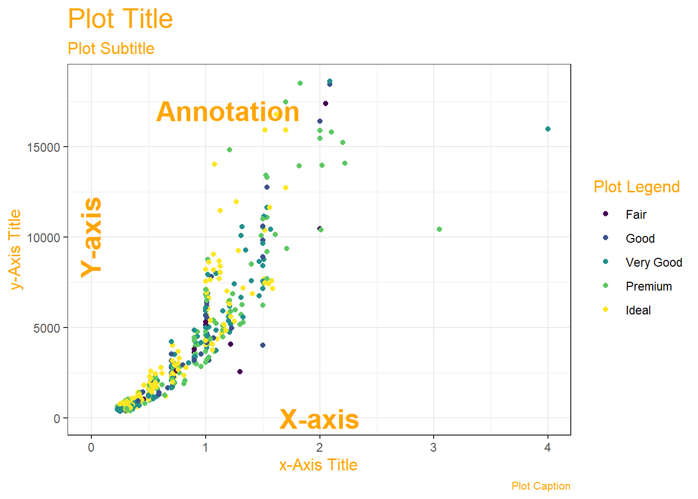

Lab-1: Science, Human Experience, Experiments, and Data
Where does Data come from? Why do we visualize it?

Where does Data come from?
Let us look at the slides. Click on the slides icon above.
Why Visualize?
- We can digest information more easily when it is pictorial
- Our Working Memories are both short-term and limited in capacity. So a picture abstracts the details and presents us with an overall summary, an insight, or a story that is both easy to recall and easy on retention.
- Data Viz includes shapes that carry strong cultural memories and impressions for us. These cultural memories help us to use data viz in a universal way to appeal to a wide variety of audiences. (Do humans have a gene for geometry?)
- It helps sift facts and mere statements: for example:

What are Data Types??
https://www.youtube.com/watch?v=dwFsRZv4oHA
{{% youtube "dwFsRZv4oHA" %}}
In more detail:
How do we Spot Data Variable Types?
By asking questions!
| Pronoun | Answer | Variable / Scale | Example | What Ope rations? |
|---|---|---|---|---|
| What, Who, Where, Whom, Which | Name, Place, Animal, Thing | Qua litative / N ominal | Name |
|
| How, What Kind, What Sort | A Manner / Method, Type or Attribute from a list, with list items in some ” order**” ( e.g. good, better, improved, best..) | Qua litative / O rdinal |
-economic status (“low income, middle income, high income)
“50K-100K”, “over 100K”)
“extremely dislike”, “dislike”, “neutral”, “like”, “extremely like”). |
|
| How Many / Much / Heavy? Few? Seldom? Often? When? |
Quantities with Scale. Differences are meaningful, but not products or ratios |
Quan titative / In terval |
(200-800), - Credit score (300-850). - Year of Starting in College |
|
| How Many / Much / Heavy? Few? Seldom? Often? When? |
Quantities, with Scale and a Zero Value. Differences and Ratios /Products are meaningful. (e.g Weight ) |
Quan titative / R atio** |
activity, dose amount, reaction rate, flow rate,co ncentration
|
|
As you go from Qualitative to Quantitative data types in the table, I hope you can detect a movement from fuzzy groups/categories to more and more crystallized numbers. Each variable/scale can be subjected to the operations of the previous group. In the words of S.S. Stevens ,
the basic operations needed to create each type of scale is cumulative: to an operation listed opposite a particular scale must be added all those operations preceding it.
What Are the Parts of a Data Viz?

How to pick a Data Viz?
Most Data Visualizations use one or more of the following geometric attributes or aesthetics. These geometric aesthetics are used to represent qualitative or quantitative variables from your data.

What does that mean? We can think of simple visualizations as combinations of these aesthetics. Some examples:
| Aesthetic #1 | Aesthetic #2 | Shape | Chart Picture |
|---|---|---|---|
| Position X = Quant Variable | Position Y = Quant Variable | Points/Circles with Fixed Size | [ ] (https://img.icons8.c om/ios-filled/100/000 000/scatter-plot.png) ] (https://img.icons8.c om/ios-filled/100/000 000/scatter-plot.png) |
| Position X = Qual Variable | Position Y = Count of Qual var) | Columns |  |
| Position X = Qual Variable | Position Y = Qual Variable | Rectangles, with area proportional to joint(X,Y) count | |
| Position X = Qu alitative Variable | Position Y = Rank Ordered Quant Variable | Box + Whisker, Box length proportional to Inter-Quartile Range, whisker-length proportional to upper and lower quartile resp. |  |
| Position X = Quant Variable | Postion Y = Quant V ariable + Qual Var |  |
|
| Quant Variable | Shape = Line with Quant Variable |  |